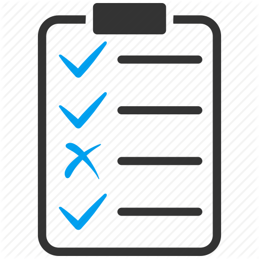

—

When a piece of software is moved from the prototype stage to the hardening and development stage, developers use a "continuous checking framework" to make sure that on every git-push all unit tests are run. If unit tests fail, the framework alerts the responsible parties with emails or other status messages.
For this course, we will not use a continuous testing framework.
Instead, we will maintain a script for our project that can run all unit tests.
Write it as a shell script or as a short program in your favorite language. Name it xtest and place it in your project-level directory
Document how to run the script in your —
Read Me. Run the script every time before you git-push.
It is acceptable for unit test cases to fail. Hence the basic output of the script is just a line or two of how many tests cases it ran, how many passed, how many failed.
Developers often add failing test cases when they have to interrupt work. It is a standard technique that reminds them where to resume the project.
It is not acceptable for unit testing to break the script (e.g., raise an uncaught exception). If unit testing fails, your script must show enough output for you to fix the problems.